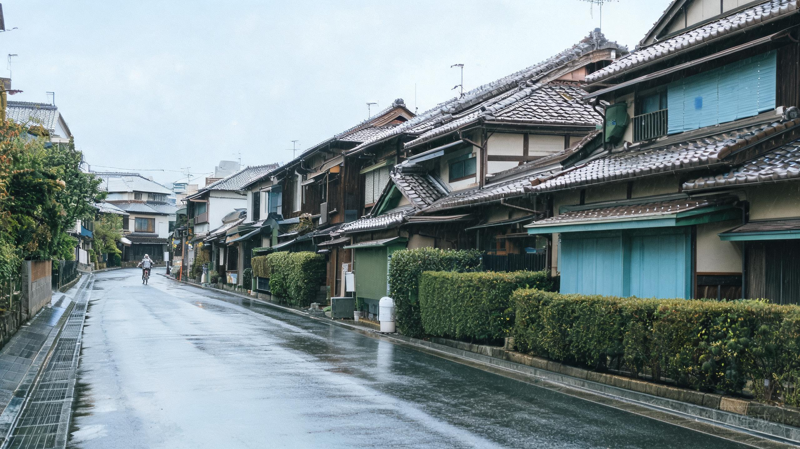
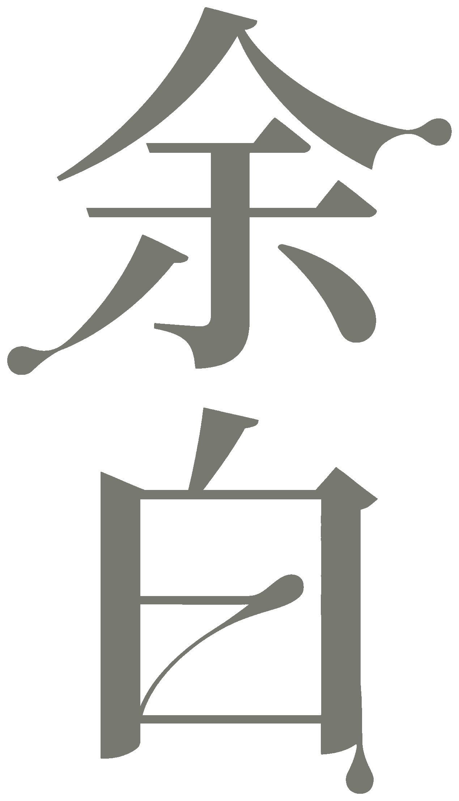

ABOUT THE AUTHOR
我记录的不是远方，
而是每天经过的地方。
我是一名 UX/UI 设计师，也是一名日常观察者。设计让我不断追问事物为何如此，摄影则提醒我，有些答案不需要被立即说清。
这里收集通勤路上的光、雨后的街道、陌生人的背影，以及那些看似普通却值得停留几秒的瞬间。

A quiet record of ordinary days
关于通勤、微雨与那些没有被特别记住的日常。
SELECTED STORY
STORY 01
下午四点，商店还没有亮灯。有人撑伞穿过巷子，鞋底把水面切成短暂的波纹。
DAILY NOTES
STORIES / 影像专题
NOTES / 日常片段
ARCHIVE / 时间归档
这个分类还没有内容。

ABOUT THE AUTHOR
我是一名 UX/UI 设计师，也是一名日常观察者。设计让我不断追问事物为何如此，摄影则提醒我，有些答案不需要被立即说清。
这里收集通勤路上的光、雨后的街道、陌生人的背影，以及那些看似普通却值得停留几秒的瞬间。